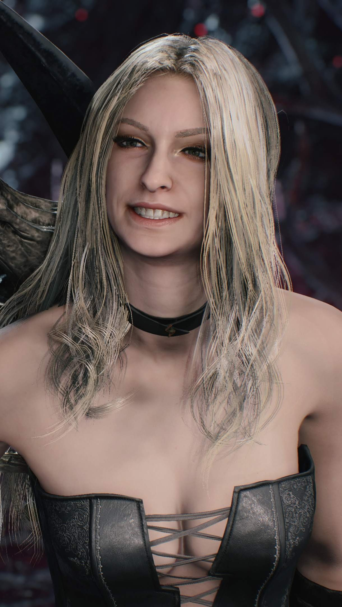
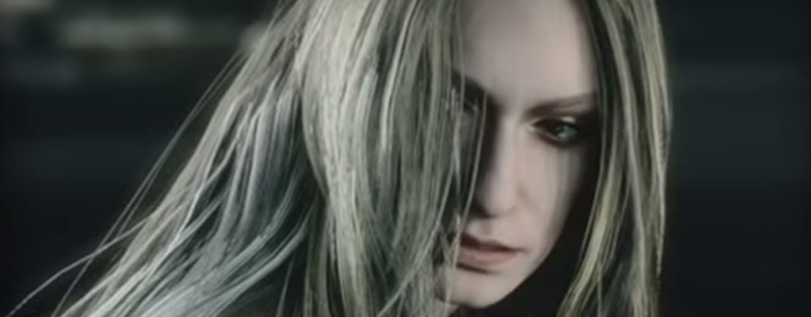

Trish é um demônio criado por Mundus que estranhamente se parece com a mãe de Dante , Eva. Após sua derrota pelas mãos de Dante, ela mais tarde se juntou a Devil May Cry e se tornou uma caçadora de demônios ao lado dele. Durante sua passagem pela Ordem da Espada, ela foi apelidada de "Gloria".
Ela é um dos personagens principais da série, embora originalmente tenha começado como uma das inimigas de Dante. Trish aparece como personagem jogável em Devil May Cry 2 e Devil May Cry 4: Special Edition, ela também está presente em Devil May Cry , Devil May Cry 4 e Devil May Cry 5 .
Trish

Trish vai a Devil May Cry uma noite para encontrar Dante. Lá ela tenta eletrocutá-lo, mas com seus poderes demoníacos, ele facilmente a domina. Trish é derrotada, mas diz a Dante que ela precisa de sua ajuda. Ela o leva para a Ilha Mallet, onde Mundus está planejando abrir o portão do Submundo para cruzar para o Mundo Humano. É finalmente revelado que Trish foi realmente criada por Mundus como uma isca para matar Dante na ilha. Depois de trair Dante durante uma luta com Nightmare e tentando matá-lo, Dante ainda salva sua vida das pedras caindo. Trish fica profundamente comovida com isso, embora ela ainda volte para seu mestre. Mais tarde, o rei demônio tenta matar Dante usando um raio muito poderoso de seu terceiro olho. No entanto, Trish retribui o favor de Dante e se sacrifica, empurrando Dante para fora do caminho da trave e permitindo-se ser atingida. Antes de seguir Mundus para o submundo, e acreditar que Trish está morta, Dante profere a famosa frase: "Eu deveria ter enchido sua alma sombria de luz!". Ele então a deixa com o Sparda e o Amuleto Perfeito. Mais tarde, encurralado por um Mundus fortemente mutante, Dante ouve a voz de sua mãe, e Trish irrompe através da parede para ajudá-lo. Ela empresta a ele seu poder e Mundus é derrotado. Com Mundus destruído, Dante e Trish se abraçam e ela começa a chorar. Dante diz a Trish que ela se tornou humana porque "Demônios nunca choram". Desde então Trish e Dante trabalham juntos na recém-renomeada loja Devil May Cry.
Em Devil May Cry 4:
Já em Devil May Cry 4, Trish está aparentemente vivendo com Dante e trabalhando ao lado dele como uma Devil Hunter. Quando Lady os informa sobre as ações da Ordem da Espada, Trish leva a Sparda para Sanctus enquanto se passava por "Gloria", e é nomeada uma Executiva dos Cavaleiros Sagrados, a fim de obter informações sobre a Ordem. Ela usa este posicionamento para espionar os Cavaleiros Sagrados, mas por causa de sua aparência e rápida promoção, ela teve uma recepção um tanto negativa pelos outros membros da Ordem. Ela descarta seu disfarce quando Dante e Nero chegam à sede da Ordem, e após o Salvadoré ativado, ela vai evacuar os habitantes da ilha enquanto Dante ataca a estátua gigante. Depois que Sanctus e o Salvador são derrotados, Trish e Lady se juntam a Dante, Nero e Kyrie.
De volta a Devil May Cry, Lady traz uma pasta com o pagamento de Dante e Trish pelo trabalho. Trish abre a caixa para encontrar um pequeno rolo de dinheiro e questiona Lady sobre o pouco pagamento que eles receberam. Lady observa que a situação em Fortuna piorou muito porque ela trouxe Sparda para eles. Ela então dirige sua atenção para Dante em busca de sua opinião. Depois de deixar claro que está satisfeito com o recebimento de dinheiro, o telefone toca e Trish atende a ligação. Depois de obter a senha que seria o "caso" de quem ligou, Dante, Trish e Lady começaram a resolver o caso juntos.
Em Devil May Cry 5:
Trish é contatada por Morrison e, junto com Lady, segue Dante em seu trabalho em relação a Urizen, tanto ela quanto Lady alcançando a sala do trono bem antes de Dante. No entanto, Urizen prova demais para eles, mesmo com Trish armado com o Artemis e os Sparda, e na chegada de Dante, ele os vê sendo jogados no chão, sem forças para lutar. Dante comenta sobre conhecer apenas uma pessoa que pode enfrentar 'duas das mulheres mais duras do mundo' antes de enfrentar o próprio Urizen, sendo derrotado também. Enquanto Urizen tenta tirar o corpo de Dante, Trish junta força suficiente para jogar o Sparda para ele, mas mesmo assim Dante é dominado e é expulso da sala do trono. Imóvel, Urizen clama tanto Trish quanto Lady, dizendo que elas servirão para lhe dar força. Urizen cumpre sua promessa ao colocar Trish em um corpo demoníaco de 'Cavaliere Angelo', um guerreiro feroz que precisa de um navio para funcionar adequadamente, utilizando poderes baseados em relâmpagos e esgrima em conjunto com cavalgar um Geryon, um corcel que manipula o tempo na batalha.
V é o primeiro a encontrar Trish nessa forma, V derrota Geryon e Cavaliere Angelo foge do campo de batalha, Angelo é encontrado novamente no mesmo dia, desta vez por Dante, que também reconhece Trish como seu núcleo. O confronto termina com Dante derrubando Cavaliere Angelo e libertando Trish, os restos do demônio fundidos em uma moto quebrada e transformando-a em um Braço do Diabo: o Cavaliere. Dante deixa Trish no chão e pede a V, que o estava seguindo, para cuidar dela enquanto ele avança. Algum tempo depois, Trish acorda na companhia de V, perguntando a ele sobre a natureza de Urizen - por ela ser um demônio e servir Mundus deu a ela conhecimento suficiente dos habitantes do Submundo para saber que não havia nenhum demônio com esse nome, muito menos exercer tanto poder. Quando algo clica em sua cabeça, ela pergunta a V o que exatamente ele é, levando V a contar a ela sobre ele ser uma manifestação da metade humana de Vergil, trazida à vida por Yamato separando-o da metade demônio, que passou a ser conhecida como Urizen. V parece arrependido por suas ações como Vergil, admitindo que procurou a ajuda de Dante para consertar seus erros.
Quando a árvore Qliphoth atinge seu pico, um violento terremoto atinge a cidade, fazendo com que V quase caia no abismo abaixo, Trish o agarrando no último momento. Os dois seguem para o nível mais baixo de Qliphoth para alcançar Dante, Nero, Lady e Nico. Trish, afirmando V como a fonte de seu conhecimento, explica a Dante que o objetivo de Urizen é o fruto da árvore Qliphoth, concedendo a um demônio uma quantidade enorme de poder, chegando a notar que o próprio Mundus consumiu tal fruta para dominar o submundo em seus dias vivos. Dante, Nero e V avançam para chegar a Urizen, enquanto Trish fica para trás com Nico e Lady.
Depois que V e Urizen se fundem novamente em Vergil, Trish é vista com Lady e Nico em uma seção de árvore em algum lugar acima do solo. Dante pousa ao lado deles, dizendo que Vergil está de volta e vai "mata-lo", e pedindo às garotas que saiam de lá. Nico começa a dirigir a van de volta ao local seguro, enquanto os galhos em que eles estavam se partem em pedaços, Nero os alcança, perguntando a Trish se ela sabia que Vergil era seu pai. Trish admite acreditar na lógica de Dante e tenta convencer Nero a não matar seu próprio pai, mas sem sucesso, quando Nero pula da van para ir e confrontar Vergil.
Semanas depois que Dante sai para o Mundo Demoníaco , Trish é vista com Lady no escritório de Dante, se perguntando quanto tempo levará para ele voltar, objetando quando Lady admite querer o escritório para ela. Morrison entra na sala, dizendo que Dante deixou uma escritura para ele pelo lugar, alegando que Dante disse que 'aquelas vadias malucas' vão destruir o lugar, fazendo Trish se perguntar se Dante está planejando voltar. Quando as luzes se apagam novamente, Lady e Trish seguem Morrison, que diz que tem um trabalho para elas.
Em Devil May Cry e Devil May Cry 2 , seu cabelo está ligeiramente repartido para a direita e seu espartilho é preto com um design de parafuso de iluminação que deixa grande parte de seu peito nu. Ela usa calça de couro preta com cinto duplo e botas pretas de cano alto. Ela complementa essa roupa com uma gargantilha, uma manopla fabricada em seu antebraço esquerdo e um par de óculos de sol.
Em Devil May Cry 4 , o cabelo de Trish está quase todo penteado para trás com uma franja lateral. Trish usa um espartilho preto com filigrana branca e um desenho de relâmpago na frente. O zíper frontal também foi projetado como um raio. Suas calças de couro preto têm raios em sua parte traseira e desenhos de filigrana brancos nos quadris. As calças de Trish são sustentadas por cintos de duas pontas. Mais uma vez, ela está com um par de botas de salto alto até o joelho. Seus acessórios consistem em uma gargantilha preta e uma manopla de couro preto com três cintos. Suas unhas são pintadas de preto.
Trish mantém esse visual em Devil May Cry 5 , mas seu espartilho é menor e mais revelador, com uma abertura maior na frente (lembrando um relâmpago) e expondo mais sua barriga. Seu estômago é mais tonificado nesta parte da série DMC, apresenta duas linhas de abdominais fortes. Seu cabelo agora tem uma franja frontal mais longa.
Trish retorna ocasionalmente e parece gostar de brincar com Dante e causar problemas, e embora ela se reúna a ele em Devil May Cry 4, ela tem basicamente os mesmos hábitos e brigas com Dante em vários pontos do jogo, ela também mostra ser mais feminina em sua aparência do que outras mulheres da série, tendo sido mostrada reaplicando o batom antes de partir para uma missão e pintando as unhas. Apesar de suas atitudes e brigas, Trish foi capaz de evacuar o povo de Fortuna mostrando que ela tem um senso moral quando se trata de civis.
Como Dante, Trish gosta de uma boa luta, prolongando uma luta com Lady por até dois dias em vez de dizer quem ela é (embora Trish elogie a habilidade e determinação de Lady e a ache mais interessante do que ela pensava).
Biografia
Em Devil May Cry 1:
Trish vai a Devil May Cry uma noite para encontrar Dante. Lá ela tenta eletrocutá-lo, mas com seus poderes demoníacos, ele facilmente a domina. Trish é derrotada, mas diz a Dante que ela precisa de sua ajuda. Ela o leva para a Ilha Mallet, onde Mundus está planejando abrir o portão do Submundo para cruzar para o Mundo Humano. É finalmente revelado que Trish foi realmente criada por Mundus como uma isca para matar Dante na ilha. Depois de trair Dante durante uma luta com Nightmare e tentando matá-lo, Dante ainda salva sua vida das pedras caindo. Trish fica profundamente comovida com isso, embora ela ainda volte para seu mestre. Mais tarde, o rei demônio tenta matar Dante usando um raio muito poderoso de seu terceiro olho. No entanto, Trish retribui o favor de Dante e se sacrifica, empurrando Dante para fora do caminho da trave e permitindo-se ser atingida. Antes de seguir Mundus para o submundo, e acreditar que Trish está morta, Dante profere a famosa frase: "Eu deveria ter enchido sua alma sombria de luz!". Ele então a deixa com o Sparda e o Amuleto Perfeito. Mais tarde, encurralado por um Mundus fortemente mutante, Dante ouve a voz de sua mãe, e Trish irrompe através da parede para ajudá-lo. Ela empresta a ele seu poder e Mundus é derrotado. Com Mundus destruído, Dante e Trish se abraçam e ela começa a chorar. Dante diz a Trish que ela se tornou humana porque "Demônios nunca choram". Desde então Trish e Dante trabalham juntos na recém-renomeada loja Devil May Cry.
Em Devil May Cry 4:
Já em Devil May Cry 4, Trish está aparentemente vivendo com Dante e trabalhando ao lado dele como uma Devil Hunter. Quando Lady os informa sobre as ações da Ordem da Espada, Trish leva a Sparda para Sanctus enquanto se passava por "Gloria", e é nomeada uma Executiva dos Cavaleiros Sagrados, a fim de obter informações sobre a Ordem. Ela usa este posicionamento para espionar os Cavaleiros Sagrados, mas por causa de sua aparência e rápida promoção, ela teve uma recepção um tanto negativa pelos outros membros da Ordem. Ela descarta seu disfarce quando Dante e Nero chegam à sede da Ordem, e após o Salvadoré ativado, ela vai evacuar os habitantes da ilha enquanto Dante ataca a estátua gigante. Depois que Sanctus e o Salvador são derrotados, Trish e Lady se juntam a Dante, Nero e Kyrie.
De volta a Devil May Cry, Lady traz uma pasta com o pagamento de Dante e Trish pelo trabalho. Trish abre a caixa para encontrar um pequeno rolo de dinheiro e questiona Lady sobre o pouco pagamento que eles receberam. Lady observa que a situação em Fortuna piorou muito porque ela trouxe Sparda para eles. Ela então dirige sua atenção para Dante em busca de sua opinião. Depois de deixar claro que está satisfeito com o recebimento de dinheiro, o telefone toca e Trish atende a ligação. Depois de obter a senha que seria o "caso" de quem ligou, Dante, Trish e Lady começaram a resolver o caso juntos.
Em Devil May Cry 5:
Trish é contatada por Morrison e, junto com Lady, segue Dante em seu trabalho em relação a Urizen, tanto ela quanto Lady alcançando a sala do trono bem antes de Dante. No entanto, Urizen prova demais para eles, mesmo com Trish armado com o Artemis e os Sparda, e na chegada de Dante, ele os vê sendo jogados no chão, sem forças para lutar. Dante comenta sobre conhecer apenas uma pessoa que pode enfrentar 'duas das mulheres mais duras do mundo' antes de enfrentar o próprio Urizen, sendo derrotado também. Enquanto Urizen tenta tirar o corpo de Dante, Trish junta força suficiente para jogar o Sparda para ele, mas mesmo assim Dante é dominado e é expulso da sala do trono. Imóvel, Urizen clama tanto Trish quanto Lady, dizendo que elas servirão para lhe dar força. Urizen cumpre sua promessa ao colocar Trish em um corpo demoníaco de 'Cavaliere Angelo', um guerreiro feroz que precisa de um navio para funcionar adequadamente, utilizando poderes baseados em relâmpagos e esgrima em conjunto com cavalgar um Geryon, um corcel que manipula o tempo na batalha.
V é o primeiro a encontrar Trish nessa forma, V derrota Geryon e Cavaliere Angelo foge do campo de batalha, Angelo é encontrado novamente no mesmo dia, desta vez por Dante, que também reconhece Trish como seu núcleo. O confronto termina com Dante derrubando Cavaliere Angelo e libertando Trish, os restos do demônio fundidos em uma moto quebrada e transformando-a em um Braço do Diabo: o Cavaliere. Dante deixa Trish no chão e pede a V, que o estava seguindo, para cuidar dela enquanto ele avança. Algum tempo depois, Trish acorda na companhia de V, perguntando a ele sobre a natureza de Urizen - por ela ser um demônio e servir Mundus deu a ela conhecimento suficiente dos habitantes do Submundo para saber que não havia nenhum demônio com esse nome, muito menos exercer tanto poder. Quando algo clica em sua cabeça, ela pergunta a V o que exatamente ele é, levando V a contar a ela sobre ele ser uma manifestação da metade humana de Vergil, trazida à vida por Yamato separando-o da metade demônio, que passou a ser conhecida como Urizen. V parece arrependido por suas ações como Vergil, admitindo que procurou a ajuda de Dante para consertar seus erros.
Quando a árvore Qliphoth atinge seu pico, um violento terremoto atinge a cidade, fazendo com que V quase caia no abismo abaixo, Trish o agarrando no último momento. Os dois seguem para o nível mais baixo de Qliphoth para alcançar Dante, Nero, Lady e Nico. Trish, afirmando V como a fonte de seu conhecimento, explica a Dante que o objetivo de Urizen é o fruto da árvore Qliphoth, concedendo a um demônio uma quantidade enorme de poder, chegando a notar que o próprio Mundus consumiu tal fruta para dominar o submundo em seus dias vivos. Dante, Nero e V avançam para chegar a Urizen, enquanto Trish fica para trás com Nico e Lady.
Depois que V e Urizen se fundem novamente em Vergil, Trish é vista com Lady e Nico em uma seção de árvore em algum lugar acima do solo. Dante pousa ao lado deles, dizendo que Vergil está de volta e vai "mata-lo", e pedindo às garotas que saiam de lá. Nico começa a dirigir a van de volta ao local seguro, enquanto os galhos em que eles estavam se partem em pedaços, Nero os alcança, perguntando a Trish se ela sabia que Vergil era seu pai. Trish admite acreditar na lógica de Dante e tenta convencer Nero a não matar seu próprio pai, mas sem sucesso, quando Nero pula da van para ir e confrontar Vergil.
Semanas depois que Dante sai para o Mundo Demoníaco , Trish é vista com Lady no escritório de Dante, se perguntando quanto tempo levará para ele voltar, objetando quando Lady admite querer o escritório para ela. Morrison entra na sala, dizendo que Dante deixou uma escritura para ele pelo lugar, alegando que Dante disse que 'aquelas vadias malucas' vão destruir o lugar, fazendo Trish se perguntar se Dante está planejando voltar. Quando as luzes se apagam novamente, Lady e Trish seguem Morrison, que diz que tem um trabalho para elas.
Aparência
Ela tem cabelos longos e loiros, olhos azuis e uma pele muito clara. Suas roupas geralmente consistem em calças pretas de couro, botas de salto alto, espartilho, cintos duplos, gargantilha e algum tipo de acessório de pulso.
Em Devil May Cry e Devil May Cry 2 , seu cabelo está ligeiramente repartido para a direita e seu espartilho é preto com um design de parafuso de iluminação que deixa grande parte de seu peito nu. Ela usa calça de couro preta com cinto duplo e botas pretas de cano alto. Ela complementa essa roupa com uma gargantilha, uma manopla fabricada em seu antebraço esquerdo e um par de óculos de sol.
Em Devil May Cry 4 , o cabelo de Trish está quase todo penteado para trás com uma franja lateral. Trish usa um espartilho preto com filigrana branca e um desenho de relâmpago na frente. O zíper frontal também foi projetado como um raio. Suas calças de couro preto têm raios em sua parte traseira e desenhos de filigrana brancos nos quadris. As calças de Trish são sustentadas por cintos de duas pontas. Mais uma vez, ela está com um par de botas de salto alto até o joelho. Seus acessórios consistem em uma gargantilha preta e uma manopla de couro preto com três cintos. Suas unhas são pintadas de preto.
Trish mantém esse visual em Devil May Cry 5 , mas seu espartilho é menor e mais revelador, com uma abertura maior na frente (lembrando um relâmpago) e expondo mais sua barriga. Seu estômago é mais tonificado nesta parte da série DMC, apresenta duas linhas de abdominais fortes. Seu cabelo agora tem uma franja frontal mais longa.
Personalidade
Como uma marionete de Mundus, Trish era originalmente cruel e indiferente, mas depois que Dante a salvou, ela começou a desenvolver emoções e compaixão por ele, e eventualmente se sacrificou para salvá-lo do ataque de Mundus. Depois de ser revivida, Trish se juntou a Dante em sua loja e mostrou entusiasmo por ser sua parceira.
Trish retorna ocasionalmente e parece gostar de brincar com Dante e causar problemas, e embora ela se reúna a ele em Devil May Cry 4, ela tem basicamente os mesmos hábitos e brigas com Dante em vários pontos do jogo, ela também mostra ser mais feminina em sua aparência do que outras mulheres da série, tendo sido mostrada reaplicando o batom antes de partir para uma missão e pintando as unhas. Apesar de suas atitudes e brigas, Trish foi capaz de evacuar o povo de Fortuna mostrando que ela tem um senso moral quando se trata de civis.
Como Dante, Trish gosta de uma boa luta, prolongando uma luta com Lady por até dois dias em vez de dizer quem ela é (embora Trish elogie a habilidade e determinação de Lady e a ache mais interessante do que ela pensava).
